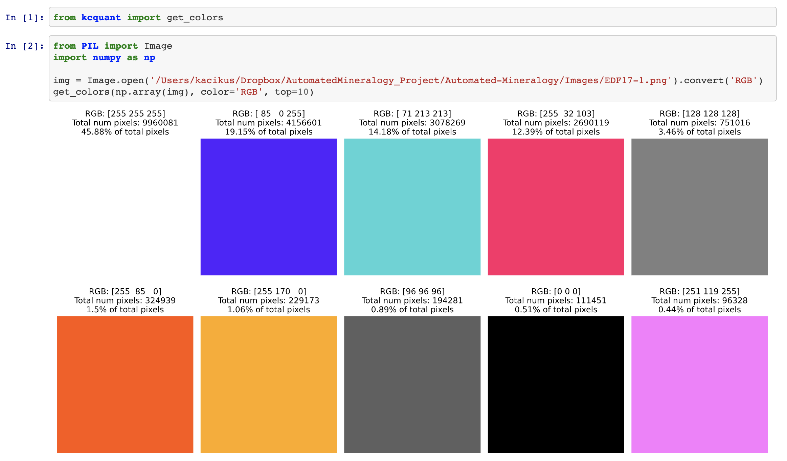
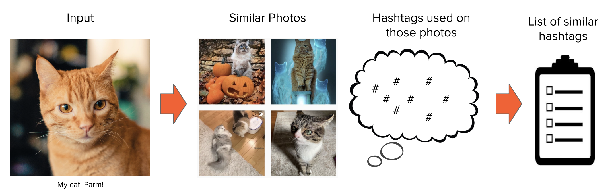
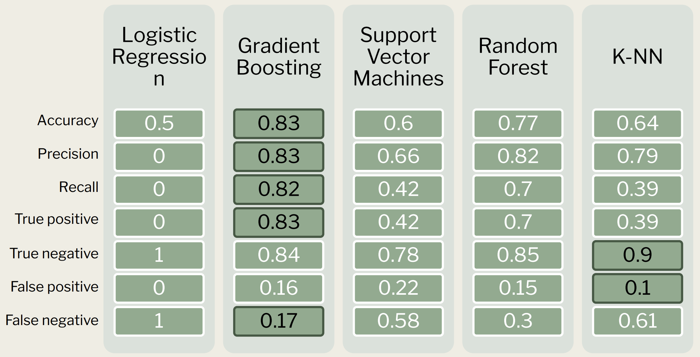

Research Projects
Current and past
Automated Mineralogy (Spring 2021)
GitHub RepositoryIn-progress with Dr. Zane Jobe, Colorado School of Mines
The goal of this project is to save TIME and MONEY by developing a machine learning model to identify mineralogy using
only petrographic photographs.
Geologists cut rocks into 0.03 mm thick slices in order to determine their
composition (mineralogy). This process is crucial in order to understand the
origin/formation of the rock, and can also help to
identify subtle differences between rocks that may look identical to the naked eye.
Example of thin sections (http://www.microscopy-uk.org.uk/mag/artfeb04/iwouslides2.html)
Typically, a petrologist is able to identify minerals based on their different features and color-changes under different light polarizations. An alternative method is to ship samples to a facility that has the proper instrumentation to shine light down onto the thin section and determine which mineral each grain is based on the spectrum of light reflected back. The first method is 1. time consuming and 2. requires years of expertise. The second method is automated and therefore potentially faster, however it can be very costly and inefficient as most facilities do not have the proper instrumentation to run this type of analysis in-house.
 Thin section under plain-polarized light
Thin section under plain-polarized light
 Thin section under cross-polarized light
Thin section under cross-polarized light
 False-color mineralogy map produced by TIMA
False-color mineralogy map produced by TIMA
For this project I developed a novel, semi-automated approach to aligning fine-grained images under different lighting conditions. The primary challenge I faced was that the immediate color-relationships between objects in the photos is not preserved under different light polarizations, therefore making fully-automated alignment nearly impossible. That being said, both plain-polarized and cross-polarized light examples are needed to differentiate mineral grains, and therefore important for building our model. Once image alignment was achieved and I was able to pre-process the necessary images for training a model, I built a CNN that would classify each pixel as one of 9 mineral grains.
Color Quantization Python Library (Initiated February 2021)
GitHub Repository // PyPI DocumentationOngoing project to create an easy-to-use open-source library for color quantization and exploratory data analysis.
Kcquant (short for Kaci Color Quantization) is a passion project of mine to create an
open-source library with useful functions to perform color quantization and exploratory data analysis on images.
Currently, kcquant has only 1 function, get_colors(), which takes 5 parameters. Future work will include
1. color quantization methods to reduce the number of pixel values, 2. methods to easily plot color frequencies and relationships
within images, 4. methods to compare/overlay images, and 5. alignment methods.
Parameters:

Example of kcquant.get_colors() being used.
Hashtag Recommender (Winter 2020)
GitHub Repository // Presentation //
Completed project to improve social media engagement
Recommender system web-app deployed on AWS EC2 instance. To keep costs down, my recommender system will only be accessible during specific periods. Please refer to the demo video to see it in action!
Instagram has over 1 billion users, and over 500 million daily active users.
As one of the most highly used social media apps, many people use it as a business tool for
relatively "free" advertising. Moreover, if a user gains enough followers, they can even use their
platform to earn a living through brand sponsorships.
FOLLOWERS = MONEY
The goal of this project was to build a tool that would take in any photo as input and return a list of related hashtags that is optimized to get the most engagement. 
Recommender system workflow
I built a modular web-scraper to collect >5,324 posts from Instagram's discover page using hashtags related to: cats, technology, food, and travel. The recommender system works by using the pre-trained convolutional neural network (CNN) MobileNetV2 to extract deep features from each image and store those features in a database along with the hashtags used and number of likes associated with each post.
When a user uploads a new image to the recommender, deep features will be extracted. K-nearest neighbors will then be used to determine the 6 most similar photos in the database. All of the hashtags used on those 6 most similar photos will then be used to find the 50 most semantically similar hashtags from the entire database of >31,500 unique hashtags. Each hashtag was also given a rating to normalize (1) how often it is used, and (2) how many likes are typically associated with it.
The final recommendation is the top 10, 20, or 30 hashtags that are most similar to the image AND have the highest rating score.
Next-day Stock Price Predictor (Winter 2020)
GitHub Repository // Presentation
Completed project to predict whether a company's stock price will rise or fall the next day.
Predicting changes in the stock market is not a novel idea, and there is no perfect formula yet -- otherwise we'd all be rich! With that in mind, I wanted to take a slightly different approach to predicting stock-price changes that would be not only accurate, but also practical for swing trading (essentially buying at after-hours and selling the next day).
I coded a web-scraper to gather the 100 most recent news headlines taken from FINVIZ for companies in the S&P500 list. I then used the yfinance python library to collect the historical stock-price data for each day that I had news headlines for each company.
By combining sentiment analysis based on news headlines, and stock-price metrics, such as 7-day and 30-day running averages, % price change, standard deviation, etc., I was able to build multiple classification models to predict whether the next day price of a stock would RISE or FALL. I found gradient boosting to produce the best results, with 83% accuracy, and 15% Type II error.
Comparitive results from five classification models. Gradient boosting seems to have the best accuracy while also minimizing false negatives. This is important because to mitigate financial risk, it is preferable to encounter more Type II errors than Type I errors.